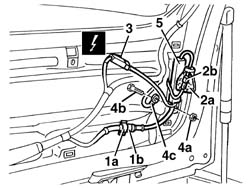

7095B72 CONTROL UNIT FOR RADIO AERIAL IN HEATED REAR WINDSCREEN - R.R.
- Path
- Procedures > 70 FITTINGS > 7095 MISCELLANEOUS BODYWORK > 7095B interventions on mechnical parts > 7095B72 CONTROL UNIT FOR RADIO AERIAL IN HEATED REAR WINDSCREEN - R.R.
- Kind
- repair procedure (removal / refitting; the operation number is the code)
- Applies to
- all engines; all production periods
- Interactive page
- https://sloeber94.github.io/elrnDB-a156/en/#/3239005
Applies to: all engines; all production periods; only with equipment: Sedan
5570T28 ecu for car radio aerial in rear window heater element - r+r .
Applies to: all engines; all production periods; only with equipment: Station Wagon
 Removing
Removing
 Refitting
Refitting7040G36 BULB HOLDER FOR LOAD CARRYING COMPARTMENT lighting on tailgate - R.R.
7015A05 tail-gate lower interior panel-r r
7015A06 tail-gate upper interior panel-r r
1. Remove retaining band (1a) and disconnect aerial lead connection (1b)
2. Open protection (2a) and disconnect the aerial lead connection (2b).
3. Disconnect the electrical connections.
 | Name | Connector |
|---|---|---|
3 | Aerial and heated rear window control unit |
4. Undo the nut (4a) and recover bolt (4b) securing earth lead (4c).
| Name | Connector |
|---|---|---|
4c | Rear earth on roof |
5. Recover the radio aerial control unit.

Applies to: all engines; all production periods; only with equipment: Station Wagon
Refitting
RemovingCheck that the radio aerial control unit is undamaged.
Position the radio aerial control unit.
Fit the control unit and earth lead using the bolt and nut.
Connect the electrical connection to the control unit.
Connect the aerial lead connection and do up the protection.
Connect the aerial lead connection and do up the retaining clip.
Check the operation of the radio aerial control unit.
7015A06 tail-gate upper interior panel-r r
7015A05 tail-gate lower interior panel-r r
7040G36 BULB HOLDER FOR LOAD CARRYING COMPARTMENT lighting on tailgate - R.R.
Topics linked from this page (6)
- 5570T28 ecu for car radio aerial in rear window heater element - r+r
- 7015A05 tail-gate lower interior panel-r r
- 7015A06 tail-gate upper interior panel-r r
- 7040G36 BULB HOLDER FOR LOAD CARRYING COMPARTMENT lighting on tailgate - R.R.
- C29 Rear earth on roof
- P22 Aerial and heated rear window control unit